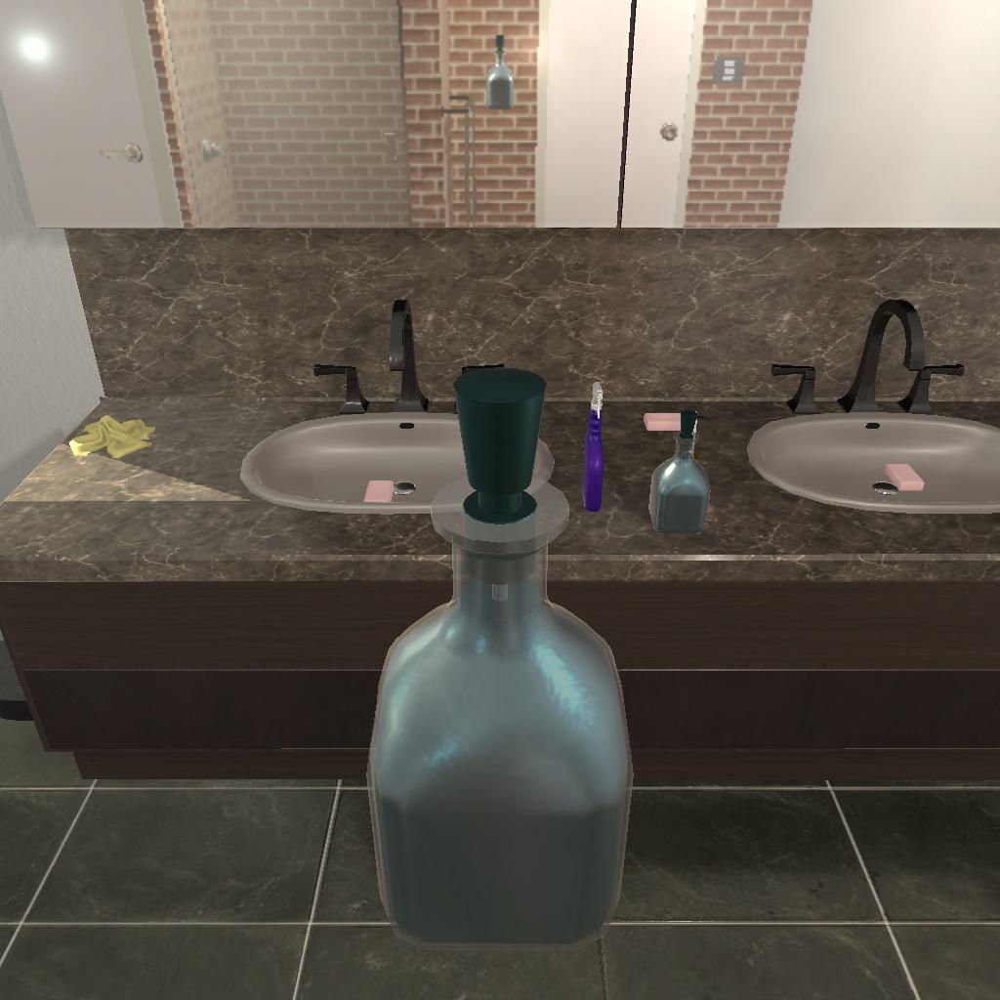
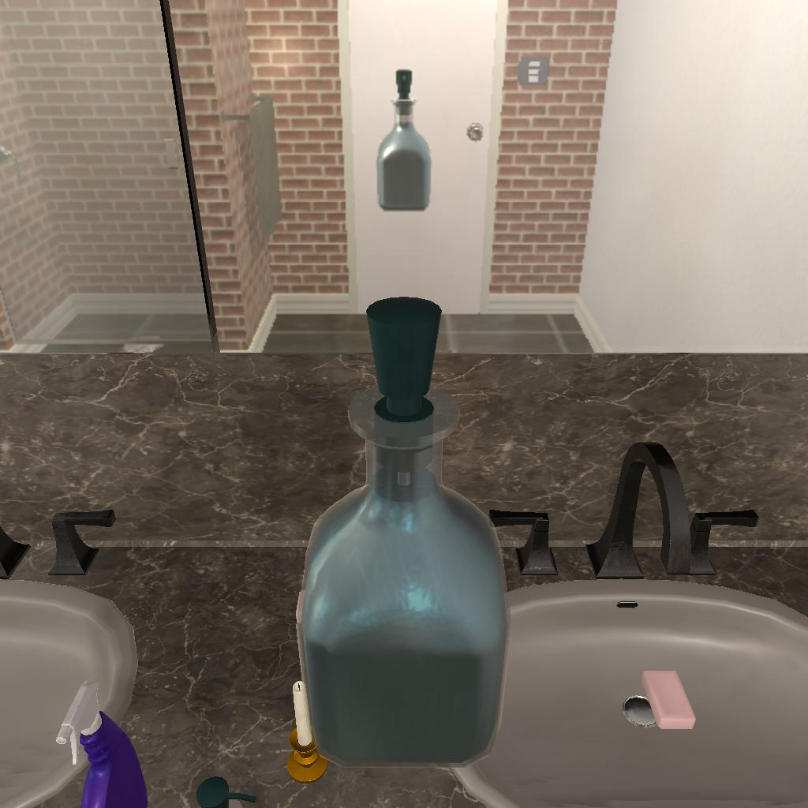

---------------------------------------------------------task: 27---------------------------------------------------------
--------------------------------------------------------------------------------------------------------------------------------------------------------------------
--------------------------------------------------------------------------------------------------------------------------------------------------------------------
Step:--------------------------------------------------------------------------13-------------------------------------------------------------------------------
----------------------------------------
VLM Prompt:
Image1:
Image2:
**Instruction**
1. Analyze the provided images to identify all visible household objects and compare the difference between images (e.h. whether the object is opened or not and taken on hand or not), focusing on those relevant to the task description "find two soapbottle and put them in garbagecan."
2. Use the analysis of images and the task hint "The agent must find an object of the desired type, pick it up, find the correct location to place it, put it down there, then look for another object of the desired type, pick it up, return to previous location, and put it down there with the other object." to answer the question: what is the most reasonable action in the choices for the task description "find two soapbottle and put them in garbagecan"?
3. Decide and write the answer using the template: The answer is: (i): , where i is the real number. If there is no desired object in images, search every place based on **Initial Observation** to find the object. And if no one is exactly correct, choose a similar answer.
**Initial Observation**
You are in the middle of a room. Looking quickly around you, you can see countertop (1), sinkbasin (1-2), sink (1-2), garbagecan (1), drawer (1-2), toilet (1), handtowelholder (1)
**Answer Choices**
(1): go to countertop 1
(2): go to sinkbasin 1
(3): go to sink 1
(4): go to garbagecan 1
(5): go to drawer 2
(6): go to sink 2
(7): go to toilet 1
(8): go to handtowelholder 1
(9): put soapbottle 2 in/on sinkbasin 2
(10): clean soapbottle 2 with sinkbasin 1
(11): clean soapbottle 2 with sink 1
(12): clean soapbottle 2 with sink 2
(13): clean soapbottle 2 with sinkbasin 2
(14): examine soapbottle 2
(15): examine sinkbasin 2
**Answer**
Let's think step by step by following the instructions.
----------------------------------------
----------------------------------------
Original Response:
Image Analysis:
In both images, we can see a countertop with two sink basins and two soap bottles. In Image 1, both soap bottles are placed on the countertop, and none of them is being held. In Image 2, one of the soap bottles appears to have been picked up as it is no longer on the countertop.
Task Description Analysis:
The task is to find two soap bottles and put them in the garbage can. Based on the task hint, the agent must pick up one soap bottle, find the garbage can, put the soap bottle there, then find another soap bottle, pick it up, and place it with the first one in the garbage can.
Initial Observation:
The garbage can is mentioned in the initial observation, so we know where to place the soap bottles once they are picked up.
Answer Choices Analysis:
The agent has already picked up one soap bottle (as seen in Image 2), so the next reasonable action would be to go to the garbage can to dispose of it.
The answer is: (4): go to garbagecan 1
----------------------------------------
----------------------------------------
>>> Refine Original VLM Response and Get Pure Action: go to garbagecan 1
----------------------------------------
-----------------------------------------------------------------
Running time: 22.78649401664734 seconds
Total Money: 14.169450000000001
-----------------------------------------------------------------
-----------------------------------------------------------------
Text Observation:You arrive at loc 3. On the garbagecan 1, you see a handtowel 1, a toiletpaper 1, a cloth 1, a soapbottle 1, a scrubbrush 1, and a plunger 1.
-----------------------------------------------------------------
UNSUCCEED